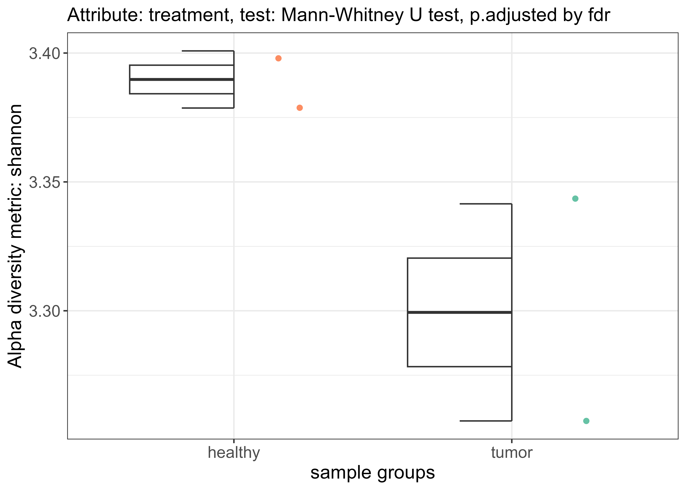
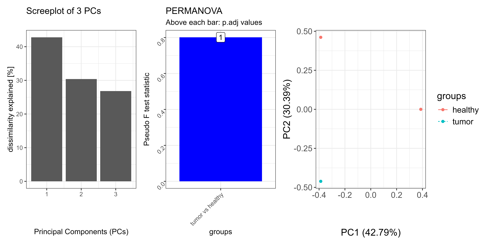
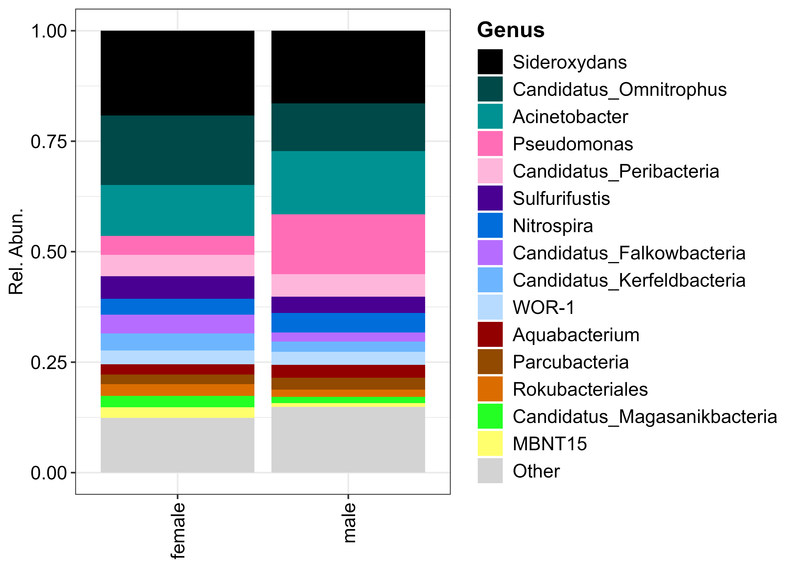

Overview
OmicFlow is a generalised data structure for fast and efficient loading of various sparse omics data. It can handle metataxonomics/metagenomics data in text or BIOM and extends to proteomics and other omics types. It also supports non-sparse data, but it’s performance peaks in sparsity.
## Installation
The latest stable version can be installed from CRAN.
install.packages('OmicFlow', dependencies = TRUE)The development version is available on GitHub.
install.packages('pak') # if not yet installed
pak::pkg_install('agusinac/OmicFlow@dev')## Usage
Initialize the metagenomics or any omics object from a filepath or pre-loaded object.
library("OmicFlow")
metadata_file <- system.file("extdata", "metadata.tsv", package = "OmicFlow")
counts_file <- system.file("extdata", "counts.tsv", package = "OmicFlow")
features_file <- system.file("extdata", "features.tsv", package = "OmicFlow")
tree_file <- system.file("extdata", "tree.newick", package = "OmicFlow")
taxa <- metagenomics$new(
metaData = metadata_file,
countData = counts_file,
featureData = features_file,
treeData = tree_file
)
taxa$feature_subset(Kingdom == "Bacteria")
taxa$scale(method = "tss")
# Access variables directly
taxa$metaData
taxa$countData
taxa$featureData
taxa$treeData
# Change variables & enjoy the automatic sync
taxa$featureData <- taxa$featureData[1:100, ]
# Inspect what functions variables are available to the class
str(taxa)### Visualisations
🔹Alpha diversity
alpha_div <- taxa$alpha_diversity(
col_name = "treatment",
metric = "shannon",
paired = FALSE # If TRUE it performs wilcox signed rank test
)
alpha_div$plot
🔹Beta diversity
By default PERMANOVA is applied pairwise against each group within the specified contrast, via group_by that is used in pairwise_adonis. The permutation design in vegan::adonis2 is by default set to free. But this may not always be the right test when you have paired samples and you also want to restrict permutations between correlated values. Therefore, pairwise_adonis supports a custom permutation design, which can be constructed via permute and fed into vegan::adonis2 as a function via pairwise_adonis with the flag perm_design.
set.seed(1970)
# Perform ordinations with in-built distance matrix computation
#--------------------------------------------------------------------------------
beta_div <- taxa$ordination(
metric = "unifrac",
method = "pcoa",
group_by = "treatment",
perm = 999
)
# Add a custom pre-computed distance matrix
#--------------------------------------------------------------------------------
qiime_unifrac <- data.table::fread("weighted-unifrac-matrix.tsv", header=TRUE)
distmat <- Matrix::Matrix(as.matrix(qiime_unifrac[, .SD, .SDcols = !c("V1")]))
rownames(distmat) <- colnames(distmat)
distmat <- distmat[taxa$metaData[["SAMPLE_ID"]], taxa$metaData[["SAMPLE_ID"]]]
distmat <- as.dist(distmat)
beta_div <- taxa$ordination(
distmat = distmat,
method = "pcoa",
group_by = "treatment",
perm = 999
)
# Add a custom permutation design via `perm_design`
#--------------------------------------------------------------------------------
## taxa$ordination() automatically will input taxa$metaData inside the supplied function.
perm_design_func <- function(meta) {
base::with(
data = meta,
expr = permute::how(
nperm = 999,
plots = permute::Plots(meta$SAMPLEPAIR_ID, type = "none"), # In case samplepair ids is supplied
within = permute::Within(type = "free")
)
)
}
beta_div <- taxa$ordination(
metric = "unifrac",
method = "pcoa",
group_by = "treatment",
perm_design = perm_design_func
)
patchwork::wrap_plots(
beta_div[c("scree_plot", "anova_plot", "scores_plot")],
nrow = 1)
🔹Composition
res <- taxa$composition(
feature_rank = "Genus",
feature_filter = c("uncultured"),
feature_top = 15,
col_name = "CONTRAST_sex"
)
composition_plot(
data = res$data,
palette = res$palette,
feature_rank = "Genus",
# If group_by = NULL, then a stacked barplot for each sample sorted alphabetically will be visualized.
group_by = "CONTRAST_sex"
)
Docker
Example: Outputs a report.html file in current work directory
docker pull agusinac/autoflow:latest
docker run -it --rm -v \
"$(pwd)":/data \ # Mount the data in a temporary directory
-w /data \ # set working directory
-u $(id -u):$(id -g) \ # non-root user
agusinac/autoflow:latest \
autoflow \ # autoflow R script
-b /data/biom_with_taxonomy_hdf5.biom \
-m /data/metadata.tsvSupport
If you are having issues, please create a ticket